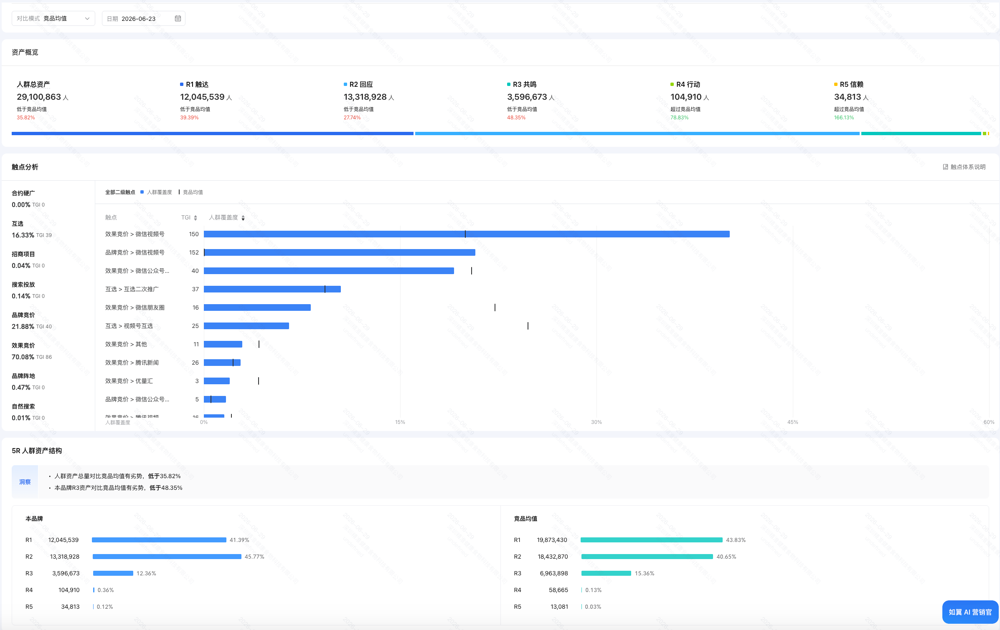
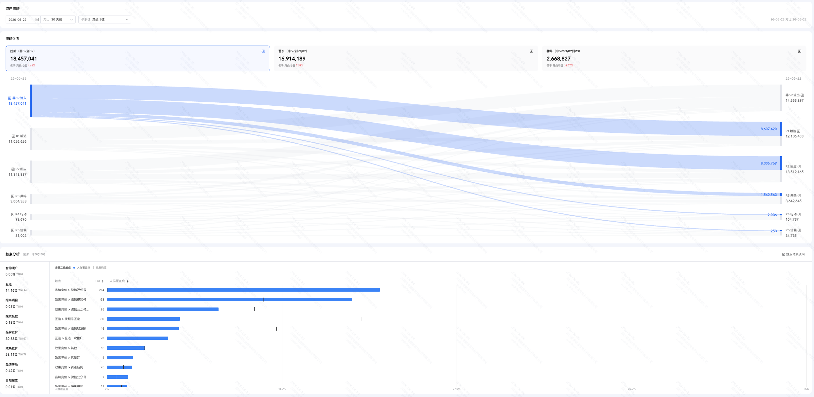
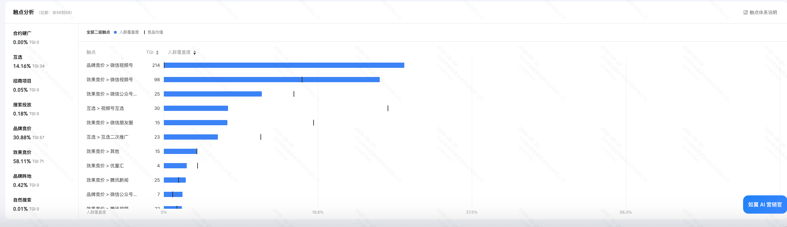

WONDERLAB × 腾讯营销
万益蓝 · 618 / H1 复盘 + Q3 建议动作
数据周期：2026.01.18 - 2026.06.26 ｜ 7 商品 165.8 万投入 ｜ 33 条视频 29 位达人
汇报日期：2026 年 6 月 30 日 ｜ 编制：Carmen × 腾讯营销服务团队
📊
PART 01
618 / H1 复盘
· 三个亮点 · 一个短板 · 五梯队诊断
1.1 · 亮点 ①
🎯 漏斗结构健康 · "健康沙漏型"
近 30 天品牌人群资产分布（2026.05.28 - 2026.06.26）
资产层 万益蓝 赛道均值 差距 判断
R1 触达 41.34% 44.49% -3.15pp 正常 R2 回应 45.82% 40.21% +5.61pp ✅ 高于均值 R3 共鸣 12.32% 15.55% -3.23pp 可控短板 R4 行动 0.38% 0.14% +0.24pp ✅ 高于均值 R5 信赖 0.13% 0.03% +0.10pp ✅ 高于均值

数据来源：如翼后台 · 品牌5R资产 · 近30天
⚡ 核心判断
R2 / R4 / R5 全部高于赛道均值 ——意味着用户从"回应"到"行动"再到"信赖"这条路径走得非常顺畅。可控短板 ，将在动作②中给出补足方案。
1.1 · 亮点 ②
💧 30 天 R3 净增 146 万人 · 沉淀成本 ¥1.13/人
桑基流转图 · 2026.05.23 - 2026.06.22
流转指标 数据 vs 赛道均值
起浮量 1,845 万 -4.42% 蓄水量（R1/R2 流入） 1,691 万 +7.59% 种草量（R3 流入） 266.88 万 +91.57% R3 净增（流入-流出） +146.38 万 — R4 净增 +9.67 万 — R5 净增 +3.07 万 —

数据来源：如翼后台 · 5R 桑基流转 · 5/23-6/22
📐 R3 单人沉淀成本测算
H1 种草总投入
¥165.8 万
7 商品 · 33 视频 · 29 达人
30 天 R3 净增
146.4 万人
流入 - 流出
⚡ 核心判断
1.13 元 / 人 的 R3 沉淀成本是膳食赛道的优秀水平 ——意味着每花 1 元，给品牌带来 1 个长期共鸣用户。
1.1 · 亮点 ③
🌐 互选触点占比 17.37% · 赛道范本
近 30 天触点结构（2026.05.28 - 2026.06.26）
触点 占比 赛道判断
效果竞价 68.88% 正常 品牌竞价 23.07% 高于均值 互选 17.37% ⭐ 赛道范本 其他 < 1% —

数据来源：如翼后台 · 触点结构 · 近30天
⚡ 核心判断
互选 17.37% 占比在膳食赛道里是少见的"敢于在品牌端持续投入"的客户 。唯一能给品牌带 R3 资产的版位 ——这件事万益蓝团队已经做对了。品牌端触点比例远高于行业均值 。
⚠️ 短板 · R3 占比仍有 3.23pp 提升空间
虽然漏斗结构健康，但 R3 占比 12.32% 仍低于赛道均值 15.55%。
主要原因（初判） ：
互选触点中"视频号互选"人群覆盖度 7.82%，赛道均值 27.23%——视频号触点结构与赛道均值存在差异
H1 互选投放在"低 CPM 高观看"达人（年糕妈妈/马姐/茅善玉）和"高 CPM 低观看"达人（李佳念/央视网快看）之间结构分化明显 ——优化空间清晰
1.2 · 视觉总览 VIZ
⭐ H1 达人星图 · 一图看完 31 条视频
X 轴：单条 CPM（元）｜ Y 轴：投入金额（元）｜ 气泡大小：观看量
31 条视频在「CPM × 投入金额」上的分布
象限解读：左下=性价比之王 ｜ 左上=高投入高回报 ｜ 右下=低投入但效率差 ｜ 右上=最需复盘
⭐ 高性价比高投入
🟡 投入大需校验
✅ 性价比之王
🔴 必须复盘归因
0
10w
20w
30w
42w
0
100
200
500
1000
5000
12500+
CPM（元）
投入金额
年糕妈妈
茅善玉
杨梅
马姐
⭐程雷
小李吃八方
陈蓉
程雷-钙
汤山小王
高志凯
吴琼
朱桢
Olga
罗振宇
央视文艺
陈蓉直播
陈松伶
王金博
饺子爸
刘雪松
央视网快看
李佳念
💡 气泡大小 ∝ 观看量
⚡ 一图两个判断
① 左下密集 （S 级 + 杨梅 / 茅善玉 / 马姐 / 年糕妈妈）= H1 投入小但效果好的腰部金矿，Q3 继续放大复用 。② 左上凸起 （程雷气泡最大）= 投入大且 CPM 优秀的核心人物，Q3 长期合作池压舱石 。
1.2 · 梯队分布 VIZ
📊 五梯队 · 视频数 + 投入金额 双视图
31 条视频按 CPM 梯队的分布密度
视频数分布（按梯队条宽 = 视频数占比）
投入金额分布（按梯队条宽 = 金额占比）
S · ¥9.0 万 · 6.6%
A · ¥18.1 万 · 13.2%
B · ¥87.7 万 · 64.0%
C · ¥13.1 万 · 9.6%
高客单段 · ¥21.0 万 · 15.3%
⚡ 两条带子读出的关键事实
第一条（视频数） ：S 级 7 条 + A 级 3 条 = 10 条"高性价比"视频已建模 ，占视频数的 32%。第二条（金额） ：S+A 级 19.8% 的预算贡献了 H1 高性价比基石。Q3 建议保持现有基本盘，并把腰部金矿（S 级线索）的预算占比再向上挪一档 ——这是把客户已经跑通的打法做大，而不是推翻重做。
📊 7 商品 H1 投入分布
1.2 · 达人画像 VIZ
🏆 S/A 级达人 · H1 性价比基石 · 10 位
Q3 长期合作池的候选样本
💎 这 10 位达人的共同特征
5 位 合作金额 ≤ ¥10,500（腰部）｜ 3 位 有银发/退休调性 ｜ 4 位 涉及女性/母婴场景 ｜ 程雷 是跨商品复用王者。动作 ⑦ 水晶球反向下钻的种子样本 ——三簇分组分别启动 AI 智选，可在 Q3 大场前拿到拓人池清单。
1.2 · 达人投放盘点
🎬 H1 视频 CPM 五梯队诊断
基于 31 条完整金额×观看数据 · 互选后台口径
各商品投入分布（新增女性益生菌品类）
商品 投入金额 达人数 视频数 CPM(元) 梯队
小蓝瓶（成人广谱） 90.4 万 11 13 308 B S100 益生菌 25.2 万 2 2 358 B 银发益生菌二期 16.4 万 5 6 95 S ⭐ 银发益生菌一期 14.0 万 5 5 108 A 液体钙（Grow 萌长 1 号） 8.8 万 2 3 100 A Easy100 PRO 7.8 万 2 2 210 B 女性益生菌 新品类 3.3 万 2 2 待补 — 合计（7 商品） 165.8 万 29 33 205 —
1.2 · S 级 性价比标杆
✅ S 级梯队 · CPM < 100 元
应 Q3 大量复用的"性价比之王" · 共 7 条视频
达人 商品 金额 观看 CPM
年糕妈妈 （ROI向直播后）液体钙 ¥2,100 48,909 ¥6 马姐的退休生活 银发一期 ¥2,100 122,605 ¥17 杨梅姐姐 YM 小蓝瓶 ¥10,500 331,050 ¥32 魅力海上花茅善玉 银发二期 ¥31,500 823,505 ¥38 年糕妈妈 （搜索向直播）液体钙 ¥2,100 345,833 ¥43 程雷cl 小蓝瓶 ¥84,000 1,161,505 ¥72 小李吃八方 银发二期 ¥42,000 442,473 ¥95
💎 核心洞察 · 万益蓝团队的腰部选号护城河
S 级梯队里有 5 位达人的合作金额 ≤ ¥10,500 ——意味着万益蓝在"低单价腰部达人"的选号能力是行业内顶尖的 。
1.2 · A & B 级
📊 A 级（优秀）+ B 级（中等）梯队
✅ A 级 · CPM 100-200 · 保持节奏
达人 商品 金额 观看 CPM
陈蓉的视频号 银发二期 ¥42,000 358,787 ¥117 程雷cl 液体钙 ¥84,000 483,902 ¥174 汤山小王 Easy100 PRO ¥54,600 296,629 ¥184
🟡 B 级 · CPM 200-500 · 待观察
达人 商品 金额 观看 CPM
高志凯频道（3 视频合计） 小蓝瓶 ¥31,500 146,232 ¥215 吴琼阮巡夫妇 小蓝瓶 ¥44,100 168,945 ¥261 碧君的生活 小蓝瓶 ¥9,555 34,125 ¥280 朱桢的一天 银发一期 ¥52,500 183,077 ¥287 青海瓦清 Easy100 PRO ¥23,205 73,009 ¥318 Olga 姐姐 S100 ¥126,000 360,207 ¥350 罗振宇 S100 ¥126,000 343,808 ¥366 央视文艺 小蓝瓶 ¥420,000 965,199 ¥435 陈蓉（直播预约） 银发二期 ¥42,000 105,369 ¥399
💡 央视文艺特别说明： CPM 435 元数据上偏高，但央视背书带来的品牌资产价值 无法用 CPM 单一指标衡量。属于"应保留"序列。
1.2 · 调优参考
📋 中后段达人 · Q3 节奏调优参考
数字仅作单一维度参考，是否调整最终由万益蓝团队综合权衡
中段达人（CPM 500-3000）
达人 商品 金额 观看 CPM
陈松伶（直播预约） 小蓝瓶 ¥84,000 67,625 ¥1,242 王金博老师 银发一期 ¥42,000 16,021 ¥2,621 饺子爸逛北京 银发二期 ¥5,250 1,947 ¥2,696
高客单达人（合作金额或形态特殊）
达人 商品 金额 观看 合作特征
央视网快看 小蓝瓶 ¥168,000 29,855 央视端品牌背书 评论员刘雪松 小蓝瓶 ¥21,000 6,323 评论员人设 主持人李佳念 小蓝瓶 ¥21,000 1,684 主持人内容
💡 我们的视角： 这一段达人合作中，陈松伶（直播预约带量）、央视网快看（央视端品牌公信力） 包含 CPM 单一指标无法衡量的额外价值。Q3 是否调整不构成"必须动作"——我们的角色是把数据摆清楚，决策权完全在客户。
1.2 · 爆款识别
🏆 单视频观看 TOP10
H1 爆款达人识别
# 达人 商品 观看 CPM Carmen 速读
1 程雷cl 小蓝瓶 116.2 万 ¥72 ⭐⭐ H1 最大爆款 2 程雷cl 银发一期 97.1 万 ¥43 ⭐ 跨商品复用 3 央视文艺 小蓝瓶 96.5 万 ¥435 ⭐⭐ 央视背书 4 魅力海上花茅善玉 银发二期 82.4 万 ¥38 ⭐⭐ 沪剧+性价比 5 程雷cl 液体钙 48.4 万 ¥174 三度复用 6 小李吃八方 银发二期 44.2 万 ¥95 银发线高效 7 Olga 姐姐 S100 36.0 万 ¥350 高净值女性 8 陈蓉的视频号 银发二期 35.9 万 ¥117 主持人调性 9 年糕妈妈 液体钙 34.6 万 ¥6 ⭐ 母婴头部 10 罗振宇 S100 34.4 万 ¥366 知识 IP
H1 达人选号的 3 个判断
1 核心人物 · 程雷cl
H1 跨 3 商品 / 3 次合作 / 累计 156 万观看 / 平均 CPM ¥96，已经是万益蓝视频号的"御用品牌人物" 。
2 腰部选号能力突出
年糕妈妈 / 马姐 / 杨梅姐姐 / 茅善玉 这一组 ¥2,000-¥30,000 的腰部达人，CPM 全部 < ¥40 ——这是行业内难得的腰部选号能力。
3 复用与试错并存
高志凯频道 3 次 / 程雷 3 次 / 陈蓉 2 次 / 年糕妈妈 2 次——验证过的达人会果断加码 ，团队决策机制成熟。
1.3 · 深度模块
🔍 小蓝瓶 ¥90.4 万 · 结构性诊断
H1 投入最重商品（占总预算 55%）· 13 条视频逐一透视
视频 金额 观看 CPM 梯队
程雷cl ¥84,000 1,161,505 ¥72 S 杨梅姐姐 YM ¥10,500 331,050 ¥32 S（性价比第一） 央视文艺 ¥420,000 965,199 ¥435 B（央视背书另算） 吴琼阮巡夫妇 ¥44,100 168,945 ¥261 B 高志凯频道（3 视频合计） ¥31,500 146,232 ¥215 B 碧君的生活 ¥9,555 34,125 ¥280 B 焕之说传奇 ¥10,290 23,316 ¥441 C 陈松伶（直播预约） ¥84,000 67,625 ¥1,242 C（带量价值另议） 评论员刘雪松 ¥21,000 6,323 ¥3,321 高客单 央视网快看 ¥168,000 29,855 ¥5,627 高客单（含背书） 主持人李佳念 ¥21,000 1,684 ¥12,470 高客单 合计（13 条） ¥903,945 2,935,859 ¥308 —
1.3 · 小蓝瓶预算结构
💰 小蓝瓶 H1 预算 · 四类划分
类别 金额 占比 含视频 Q3 节奏参考
✅ 性价比基本盘 ¥538,500 60% 程雷 + 央视文艺 + 杨梅 + 吴琼 + 高志凯 + 碧君 + 焕之说 建议继续合作 📺 品牌背书段 ¥273,000 30% 陈松伶（直播预约带量）+ 央视网快看（央视端公信力）+ 评论员 / 主持人内容 带额外品牌价值，是否调整完全由客户判断 其它（自播分发等） ¥92,445 10% 自播间 + 其他长尾 不影响主体决策
💡 我们的视角： 小蓝瓶 H1 是"性价比基本盘 + 品牌背书段"双轨投放 结构——基本盘已经跑出非常成熟的腰部打法；品牌背书段（央视端、主持人内容）包含 CPM 单一指标无法衡量的价值。Q3 是否调整内部结构、调整多少，完全由客户综合判断，我们不做强建议。
1.4 · 新洞察
🌱 女性益生菌新品类 · H1 试水
2026 年 6 月 H1 末期新建立的品类线
维度 数据
H1 视频数 2 条 投入 ¥32,550 投放周期 6/2 - 6/3（试水 2 天） 达人 粤式斯文 SISI ¥27,300 + 主持人李秀媛 ¥5,250调性 粤语向 + 台湾女主持
初判： 这是 H1 末期才起的新品类，观看量数据未拉到 ，所以无法做 CPM 诊断。但选号方向（粤语向 / 台湾女主持）显示万益蓝在女性益生菌上做的是差异化区域+调性试水 ，不是简单的大流量打法。
📌 Q3 建议
1 建立独立 ROI 跟踪表
把"女性益生菌"单独建立一个商品线 ROI 跟踪表，与小蓝瓶 / S100 / Easy100 解耦。
2 3-5 位差异化达人测试
不只是粤语 / 台湾——例如中年女性向 / 母婴向 / 都市白领向，扩展女性场景覆盖度。
3 与 S100 的定位差异化
"S100（高净值女性）"和"女性益生菌（功能向女性）"应建立清晰差异化心智，避免内部消耗。
1.5 · 核心结论
📌 H1 复盘 · 一页看完
✅ H1 做对的事
万益蓝团队的种草路径完全正确 ——既出 GMV 又出 R3 资产，达人选号成熟、腰部选号能力突出 、互选触点结构健康、R3 沉淀效率优秀。
⚠️ Q3 可优化的 3 个方向
1 R3 占比短板
12.32% vs 赛道 15.55%，差 3.23pp，需在 Q3 持续补给 R3 资产沉淀 。
2 小蓝瓶投放结构
"性价比基本盘 + 品牌背书段"双轨结构清晰，Q3 可基于客户判断把腰部金矿（S 级线索）的占比再向上挪一档 。
3 缺乏事后 R3 沉淀效率视角
现阶段花的钱攒下了多少长期品牌资产，缺乏数据维度的量化口径 。
🚀
PART 02
Q3 建议动作
· 6 个加码动作 · 3 个对齐期待
2.0 · 全景导览 VIZ
🎯 Q3 八个动作 · 影响力 × 紧迫度矩阵
一图看完 Q3 6 个加码动作的优先级
🟦 高影响 · 低紧迫
🟥 高影响 · 高紧迫
🟫 低影响 · 低紧迫
🟧 低影响 · 高紧迫
③
小蓝瓶腰部加密
①
已验证爆款达人池
⑤
Q3 大场矩阵 · 无超品日
⑦
S/A 级水晶球下钻
⑧
TOP10 内容方法论
④
商品级月度效率复盘
紧迫度 →
← 影响力
🟥 高影响 · 高紧迫 · 立刻启动
动作 ③ · 小蓝瓶腰部加密（基于客户判断把 S 级线索占比再向上挪一档）动作 ① · 程雷 / 茅善玉 / 杨梅 / 年糕妈妈长期合作池动作 ⑤ · Q3 三场自播 + 三场达播节奏拍板
🟦 高影响 · 低紧迫 · 系统建设
动作 ⑦ · S/A 级达人 → 水晶球反向下钻拓人池动作 ⑧ · TOP10 内容方法论 → 标准化脚本库
🟫 低影响 · 低紧迫 · 持续打磨
动作 ④ · 7 商品种草综合效率排行表→ 月度产出，纳入动作⑥固定章节
2.1 · 动作 ①
🏆 已验证爆款达人 · 长期合作池
H1 已验证 TOP4，Q3 进入"长期合作池"按月度节奏稳定投入
达人 H1 累计观看 H1 平均 CPM 跨商品 Q3 建议
程雷cl 156.0 万 ¥96 小蓝瓶 / 银发 / 液体钙 月度锁定 1 条 + 99/双11 重点合作 魅力海上花茅善玉 82.4 万 ¥38 银发二期 银发线月度复用，拓二期续约 杨梅姐姐 YM 33.1 万 ¥32 小蓝瓶 性价比第一名，季度续约 年糕妈妈 39.5 万 ¥24 液体钙 母婴线月度复用
💡 我们能给的支持： 互选加热预算（让爆款内容多曝光 30%-50%）+ 大场前 2 周 R3 蓄水方案
2.1 · 动作 ③
📈 小蓝瓶 · 腰部金矿加密建议
在不动客户现有"性价比基本盘 + 品牌背书段"双轨结构的前提下，新增 Q3 增量供给
Q3 建议在小蓝瓶板块增配的腰部方向
方向 参考调性 Q3 新增建议 H1 已验证 CPM 区间
沪剧 / 文艺向腰部 类似茅善玉 1-2 位 ¥30-50 女性生活向腰部 类似杨梅姐姐 1-2 位 ¥30-100 母婴 / 银发向腰部 类似年糕妈妈、小李吃八方 1-2 位 ¥6-95
💡 这一动作的定位： 客户腰部选号能力已经在 H1 跑通——年糕妈妈 ¥6、茅善玉 ¥38、杨梅 ¥32，这是行业内非常难得的成熟打法。我们的角色不是替客户选号，而是协助把 H1 这套腰部选号能力在 Q3 复用到更多新人选上 ，让基本盘更厚。
📌 关于现有"品牌背书段"： 陈松伶（直播预约带量）、央视网快看（央视端公信力）的合作是否调整，完全由客户综合判断 。我们这一页只针对"如何把基本盘做厚"提供腰部供给侧建议，不对现有合作做任何评价。
2.1 · 动作 ④
📊 商品级种草效率月度复盘
H1 在 7 个商品线均有投入，CPM 效率分化明显
商品 H1 投入 H1 CPM 单视频最大观看 Q3 关注点
银发益生菌二期 16.4 万 ¥95 茅善玉 82.4 万 CPM 最低 + 爆款，Q3 加码概率高 液体钙 8.8 万 ¥100 程雷 48.4 万 被低估的母婴线 ，值得加码银发益生菌一期 14.0 万 ¥108 程雷 97.1 万 老 SKU 仍有效率 Easy100 PRO 7.8 万 ¥210 汤山小王 29.7 万 新品起量阶段，需多轮测试 小蓝瓶 90.4 万 ¥308 程雷 116.2 万 重投商品，结构优化（见动作③） S100 25.2 万 ¥358 Olga 36.0 万 CPM 最高，需校验长期价值 女性益生菌 新品 3.3 万 待补 — 新品类试水，Q3 重点跟踪
⚡ 三个关键判断
① 银发线 = H1 性价比之王 · 一期/二期 CPM 均 < ¥110，单视频均有爆款② 液体钙 = 被低估的母婴线 · CPM 仅 ¥100，但 H1 投入最低，Q3 可加码③ 小蓝瓶 = H1 主力投入 · 占总投入 55%，性价比基本盘（S+A 段）已成型，Q3 建议把腰部金矿占比再向上挪一档
💡 我们能给的支持： 每月提供一份"7 商品的种草综合效率排行表"——含 CPM / 单视频观看 TOP / 累计观看 / 跨商品复用达人识别 4 个维度。
关于"商品维度 R3 资产沉淀"的说明： 腾讯营销侧 5R 资产数据目前只支持品牌维度合并展示，不支持单商品独立拆分 。我们的月度商品级复盘将基于「种草投放报告 + 互选触点效率」两个真实可拉的口径，不做 5R 拆分。
2.1 · 动作 ⑤
🎬 Q3 大场矩阵 · 无超品日路径
2026 Q3 膳食行业不参加超品日，Q3 增长靠客户自有大场矩阵支撑
大场类型 Q3 建议节奏
品牌自播大场 7 / 8 / 9 月各 1 场 达播大场 7 / 8 / 9 月各 1-2 场 互选大场 季度 1 次集中爆破 品牌大场（视频号原生） 季度 1 次
📐 每个大场建议执行 · 三段式结构
2.2 · H1 种草整体效果 营销复盘报告
📈 H1 互选种草 · 全行业横向数据印证
数据来源：营销复盘报告导出 · 万益蓝/wonderlab · 计算周期 2026-01-01 ~ 2026-06-19 · 转化时长 60 天
⚡ 一句话先说
万益蓝 H1 互选种草不仅"做了"，而且在全行业横向口径下，每一项核心指标都跑赢竞品和行业均值 ——这是 PART 1 所有腰部达人选号能力的最终背书。
三大模块 · 12 项核心指标 vs 行业基准
模块 指标 本品 竞品均值 行业均值 行业 TOP5 vs 行业
广告触达 曝光人数 863.99 万 — — — — 花费 ¥223.90 万 — — — — 人均曝光成本 ¥0.26 ¥0.21 ¥0.10 ¥0.91 中位水平 品牌资产 投后 5R 总资产 863.99 万 — — — — 人群增长率 4.87 倍 2.48 2.60 4.48 ✅ 已接近行业 TOP5 R3 流入率 13.90% 4.39% 4.21% 16.81% ⭐ 3.3 倍于行业均值 拉新占比 82.95% 37.67% 54.72% 99.98% ✅ 1.5 倍于行业 加深率 39.91% 29.50% 31.85% 85.87% ✅ 优于行业 转化效果 转化人数 2.45 万 — — — — 人群转化率 0.284% 0.023% 0.024% 0.217% ⭐⭐ 12 倍于行业、已超 TOP5 人均转化成本 ¥91 ¥905 ¥437 ¥1,421 ⭐⭐ 行业 1/5 ROI 11.97 1.14 0.71 2.08 ⭐⭐⭐ 行业 17 倍、TOP5 5.7 倍
💡 三条结论（已可量化） 种草 ROI 11.97 = 行业 TOP5 (2.08) 的 5.7 倍 ——万益蓝是膳食行业种草 ROI 天花板级别玩家。R3 流入率 13.90% vs 行业 4.21% ——H1 选号的「腰部金矿打法」已在行业横向口径下被验证有效。人均转化成本仅 ¥91（行业 1/5） ——意味着每一笔互选投入都在产出真实的 R3 沉淀+下单转化，不是"为种草而种草"。
2.3 · H1 互选触点深度拆解
🎯 视频号互选 · R3 流入率分触点对比
同一份预算在不同互选触点下的 R3 沉淀效率差异
分触点 R3 流入率（万益蓝 H1 实测）
互选触点 本品 R3 流入率 本品历史均值 竞品均值 行业均值 行业 TOP5
互选（合并） 13.90% 9.07% 11.76% 20.86% 33.17% 互选 > 视频号互选 13.90% 9.10% 11.88% 21.76% 34.57% 互选 > 公众号互选 8.64% 15.71% 2.05% 5.05% 20.79%
⚡ 两个关键事实
① 万益蓝视频号互选 R3 流入率 13.90% 已超竞品均值 (11.88%)，但距离行业 TOP5 (34.57%) 仍有 2.5 倍空间 ——这是 Q3 互选预算可以稳健加码的核心依据，不是"突破"，是"上探"。低优先级机会点 ，不必强行铺开。
PART 2 章末小结 · 把 H1 数据翻译成 Q3 三句话
① 选号能力（PART 1） ：腰部达人的 CPM 五梯队画像 + 银发/母婴/知识三大线种已沉淀方法论。② 种草效果（2.2） ：12 项核心指标全面跑赢行业均值，ROI 已达行业 TOP5 的 5.7 倍。③ Q3 复用方向（动作 ①~⑨） ：把 H1 已验证的腰部金矿打法 → 用如翼 AI 智选 + 钜如翼反推扩大池子。
2.1 · 动作 ⑦ 如翼下钻
🔮 S/A 级达人 · 水晶球反向下钻
基于 H1 已验证的 S/A 级达人样本，用如翼 AI 智选反推 Q3 拓人池
⚡ 核心思路
对单个达人无法直接做水晶球洞察，但可将 H1 的 S 级 + A 级共 10 位达人按调性分组 ，每组作为种子信号反向输入 AI 智选，生成精准人群包，再用水晶球 10 维度洞察（3 大类） 反推匹配的 IP 节目与达人清单。
Step 1 · 调性簇分组（基于 H1 实测 CPM < 200 的 10 位达人）
调性簇 包含达人 核心标签
簇 A · 银发养生型 魅力海上花茅善玉 / 马姐的退休生活 / 小李吃八方 / 朱桢的一天 / 陈蓉的视频号 55+/退休/沪剧/家庭健康 簇 B · 母婴妈妈型 年糕妈妈 ×2 / 杨梅姐姐 YM 25-40 女性/育儿/家庭采购决策 簇 C · 知识权威型 程雷cl / 央视文艺 / 罗振宇 / Olga 姐姐 35-55 高知/央视背书/品味/财经
Step 2 · 三簇并行启动 AI 智选 · 5 个工作日
动作 耗时 产出
① 输入三簇 brief（商品颗粒度选人） 当天 每簇 3 个 AI 智选人群包 ② AI 智选计算 72 小时 水晶球画像生成 ③ 推送至投放端 48 小时 投放端可见 ④ 钜如翼 + 翼红人反推 1 天 IP 节目清单 + 达人清单
⏱️ 时间预算： 从 brief 到拿到完整清单至少需要 5 个工作日。Q3 大场前 4-6 周必须启动 ，否则赶不上大场前的人群推送窗口。
2.1 · 动作 ⑦ · 续
📊 水晶球洞察 · 实际维度结构
如翼后台水晶球洞察支持 3 大类共 10 个维度，按 brief 需要勾选
大类 维度 对客户的价值
人群维度 人群基础属性 性别/年龄/地域/消费力等基础画像 行业推荐人群 识别本行业内已沉淀人群标签 品牌共鸣人群 识别可联名/异业合作的相邻品牌 受众影音偏好 识别音乐/影视调性，辅助内容形态判断 场景维度 受众长视频偏好 腾讯视频频道/节目 TOP10 - Q3 大场冠名/植入候选 受众阅读偏好 - 公众号 公众号一级类目 TOP10 - Q3 扩链路方向 受众阅读偏好 - 视频号 视频号一级类目 TOP10 - 验证 H1 选号 + 拓池 兴趣场域 - 媒体位 用户活跃的腾讯系媒体位分布 受众新闻偏好 新闻资讯调性，辅助内容供给 商品维度 受众商品偏好 跨行业商品 TOP10 - 联合营销/异业合作切入点
📌 实操建议： 水晶球洞察一次任务可勾选多维度同时下钻，但 brief 时建议聚焦 3-4 个核心维度 避免输出散乱。万益蓝下钻三簇达人时，推荐组合：「受众阅读偏好-视频号」+「品牌共鸣人群」+「受众商品偏好」 ——三段构成"选号验证 + 异业联名 + 货盘扩品"完整闭环。
Step 3 · 三段重叠度交叉（核心交付物）
重叠区 含义 Q3 动作
已合作 ∩ AI 反推 水晶球验证 H1 选号准确 续约 + 加码（呼应动作①） 已合作 - AI 反推 H1 选了但水晶球不推荐 Q3 校验 R3 沉淀效率 AI 反推 - 已合作 水晶球推荐但 H1 未合作 ⭐ Q3 拓人池候选名单 ⭐
⚠️ 工具能力边界说明： 水晶球每维度仅展示 TOP10、不同维度的 TA 浓度标尺不可跨维度比较、AI 智选投放端不支持年龄/性别定向且不能与其他机会人群同投。这些限制将在 brief 阶段前置考虑。
2.1 · 动作 ⑧ 内容方法论
🎬 TOP10 爆款 · 四象限内容拆解
不看达人粉丝盘（不可复制），看内容形态（可复用方法论）
⚡ 核心思路
单视频 TOP10 是 H1 的内容爆款样本。达人有粉丝盘是不可复制变量，但内容形态可以沉淀为脚本模板 ——这是 Q3 给新合作达人提供的"可复制爆款公式"。
角度 1 · 内容形态分类（最关键）
内容形态 TOP10 里的视频 Q3 可复用价值
场景代入剧 （故事开篇）程雷 116 万 / 央视文艺 96 万 🔴 高复用 Q3 拍同款脚本给其他达人套用沉浸式产品体验 魅力海上花茅善玉 82.4 万 🟠 中复用 需达人有专业身份背书多人对话/夫妻对谈 吴琼阮巡夫妇 16.8 万 🟡 低复用 双 IP 形态稀缺知识科普口播 罗振宇 34.4 万 🟠 中复用 可批量化生活日常 vlog 软植入 年糕妈妈 34.6 万 / Olga 36 万 🔴 高复用 情感链路最深
💡 核心判断： TOP10 里"场景剧 + vlog 软植入 "两种形态占 6 条——Q3 建议将这两类内容沉淀为标准化脚本模板 ，给新合作达人套用，降低试错成本。
2.1 · 动作 ⑧ · 续
📝 内容拆解 · 角度 2-5
角度 2 · 开头 3 秒钩子分析
钩子类型 案例 留人能力
冲突开场（"我居然……"） 程雷 116 万 极强 身份开场（"作为央视主持……"） 央视文艺 96 万 强 痛点开场（"很多人都……"） 待对照标注 中 悬念开场（"今天要给大家……"） 待对照标注 中
角度 3 · 植入位置 & 时长占比
植入位置 ：开头/中段/结尾——结尾占比越高 = 内容主导，开头占比越高 = 硬广味重时长占比 ：≤30% 为"软植入"，>50% 偏硬广TOP10 中"软植入率高"的视频在 R3 沉淀效率上理论更好——此项作为 Q3 月度复盘的固定指标
角度 4 · 商品口播 keyword 整理
视频 核心 keyword 出现次数
程雷 116 万 万益蓝、肠道、菌活力 待统计 茅善玉 82.4 万 银发、舒畅、菌 待统计
此份 keyword 整理结果将形成 "H2 内容标准 keyword 库" ，确保所有合作达人口播一致性，强化品牌心智单元的统一记忆。
角度 5 · CTA（转化引导）方式
CTA 形态 H1 案例
直接挂车 年糕妈妈 ROI 向 直播预约 陈松伶 / 陈蓉的视频号 评论区引流 央视文艺 私域引流 待对照标注
💡 Q3 应用： H2 将"直播预约"型 CTA 用在大场前 3-7 天的内容上，与动作⑤的三段式蓄水节奏直接绑定 ——形成"种草→蓄水→爆破"完整链路。
2.1 · 动作 ⑧ · 续
🔁 内容拆解 · 角度 6-7
角度 6 · 评论区情绪 + 二创情况
观测维度 说明
评论区 TOP 高频词 识别用户对内容的真实反馈与心智落地词 用户自发二创 判断内容是否激发了 UGC 传播链 "求购"等高意向评论 识别真正进入购买决策的潜在用户密度
此部分数据如翼后台不可见，需客户运营同事配合拉取视频号原生评论数据 ——是 Q3 月度复盘机制需新建立的协作环节。
角度 7 · 用如翼做"爆款内容反推人群"
🌟 这是 Q3 价值最大的动作 · 内容方法论闭环回到如翼
将 TOP10 视频按内容形态簇分组后，用 AI 智选反向验证"哪种内容形态打到了哪类人群"——把内容创意决策从"达人粉丝量驱动"升级为"内容形态 × 人群画像 "双维度决策。
步骤 操作
① 内容形态簇分组 TOP10 视频按"剧情型 / 口播型 / vlog 型 / 对谈型"分 4 组 ② 每簇启动 AI 智选 brief 用该内容簇的核心场景描述（而非达人本身） ③ 水晶球验证 看"商品偏好 / 品牌共鸣"维度，验证每种内容形态打中了哪类人群 ④ Q3 选号逻辑升级 按"内容形态适配的人群画像"匹配达人，不按"达人粉丝量"匹配
⚡ 动作 ⑦ × 动作 ⑧ 的方法论闭环
动作 ⑦ ：从已合作达人 → 水晶球 → 反推未合作达人候选清单（选谁 ）动作 ⑧ ：从已合作内容 → 水晶球 → 反推内容形态适配人群（怎么拍 ）"达人 × 内容形态 × 人群画像"三维决策矩阵 ——这是万益蓝在膳食赛道领先一步的核心方法论资产。
THANK YOU
万益蓝 × 腾讯营销服务团队 · 2026/06/30 ｜
文档版本：v2.0 ｜ 编制：Carmen × 腾讯营销协同